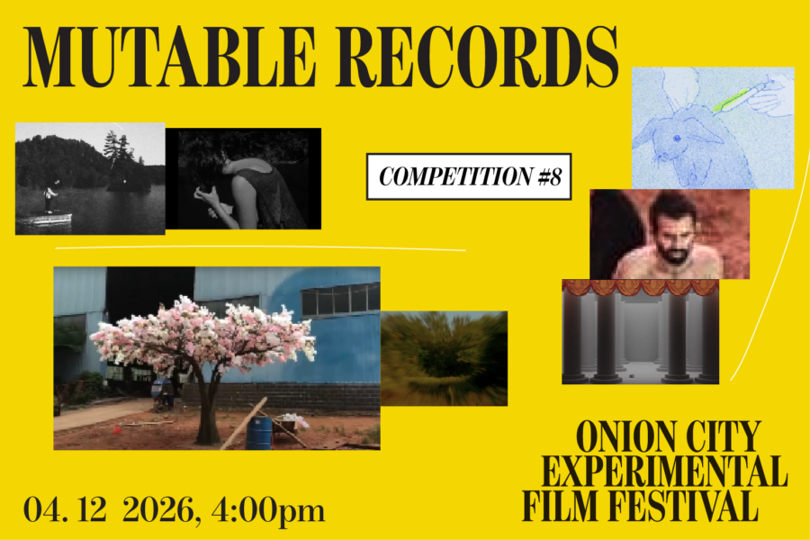

Onion City: Mutable Records
Parse the past as MUTABLE RECORDS, a program of works that deconstruct oppressive histories through montage, testimony, surrealism, and reverie. Memories and archival footage are arranged with insight, dignity, and curiosity.
Lineup:
Green Grey Black Brown | Yuyan Wang | South Korea/China/France | 2024 | 12 min | Chicago Festival Premiere
A Metamorphosis | Lin Htet Aung | Myanmar | 2025 | 17 min | Chicago Festival Premiere
Man number 4 | Miranda Pennell | UK | 2024 | 10 min | Chicago Festival Premiere
Adieu Ugarit | Samy Benammar | Canada | 2024 | 16 min | Chicago Festival Premiere
Suspicions About the Hidden Realities of Air | Sam Drake | US | 2025 | 9 min | Chicago Festival Premiere
The Rabbit Always Dies | Oona Taper | US | 2025 | 9 min | Chicago Festival Premiere